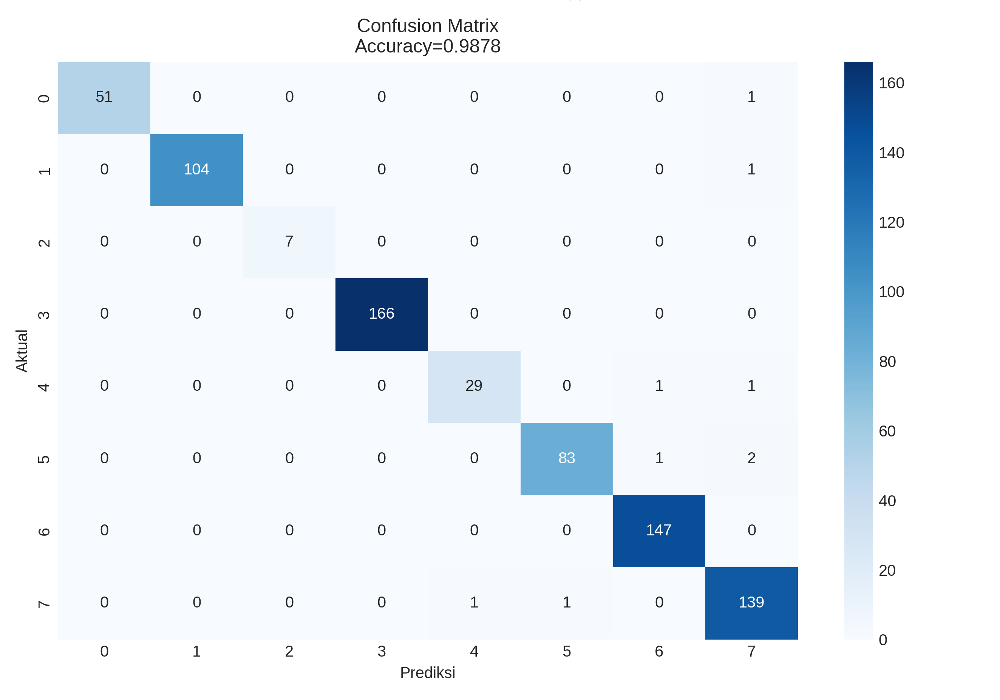
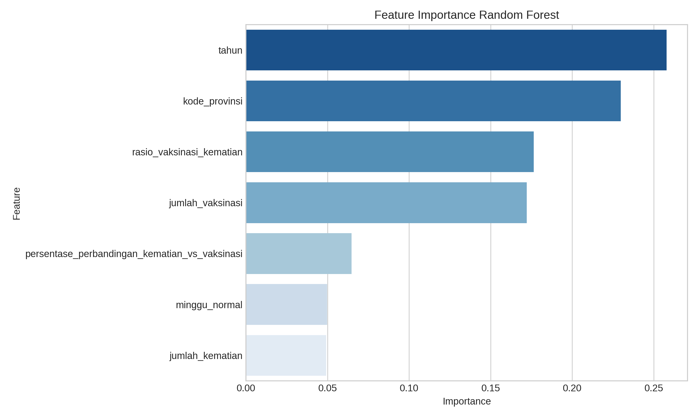

Analisis klasifikasi dilakukan menggunakan Random Forest Classifier.
Model digunakan untuk memprediksi hasil cluster berdasarkan fitur yang tersedia pada dataset.
Hasil evaluasi menunjukkan accuracy sebesar: 98.78%.
Nilai ini menunjukkan bahwa model mampu mempelajari pola cluster dengan sangat baik.
Akurasi sangat tinggi.
Metode ensemble learning.
Error klasifikasi rendah.

Berdasarkan hasil Random Forest, variabel paling dominan adalah: tahun dan kode_provinsi.
Hal ini menunjukkan bahwa faktor waktu dan wilayah memiliki pengaruh besar terhadap pola data.
Variabel vaksinasi dan rasio vaksinasi terhadap kematian juga memberikan kontribusi penting dalam proses klasifikasi.

File model hasil klasifikasi dapat diunduh melalui tombol berikut.
Random Forest berhasil melakukan klasifikasi cluster dengan tingkat akurasi yang sangat tinggi.
Hasil confusion matrix menunjukkan sebagian besar prediksi berada pada diagonal utama, sehingga model dinilai stabil dan konsisten.